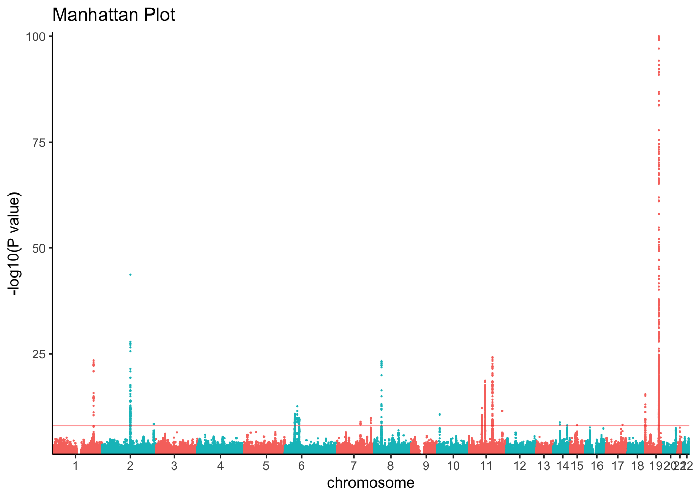

Mendelian randomization (MR) is a statistical method used in genetic epidemiology to examine the causal relationship between a modifiable exposure and an outcome. This tutorial provides an overview of the underlying theory and assumptions for various MR methods and step-by-step guidance on how to implement them using R.
The following genome-wide association studies (GWAS) are used as example traits for each of the MR methods covered in this tutorial.
Lipids
A GWAS of low-density lipoprotein (LDL) cholesterol, high-density lipoprotein (HDL) cholesterol, triglycerides and total cholesterol levels conducted in 188,577 individuals that identified 157 loci were associated with lipid levels.
Willer, C. J. et al. Discovery and refinement of loci associated with lipid levels. Nat Genet 45, 1274–83 (2013).
tc_path ="resources/Willer2013tc.chrall.CPRA_b37.tsv.gz"tc_ss <-read_tsv(tc_path, comment ="##", col_types = coltypes, col_select =c(DBSNP_ID, CHROM, POS, REF, ALT, AF, BETA, SE, Z, P, N, TRAIT))# Filter on p < 0.5 to reduce computeggman(filter(tc_ss, P <0.05& P >1e-100), snp ="DBSNP_ID", bp ="POS", chrom ="CHROM", pvalue ="P", relative.positions =TRUE) +theme_classic()
A GWAS of Alzheimer’s disease conducted in 94,437 indivudles by the International Genomics Alzheiemr’s Project that Identified 20 genome-wide significant loci.
Kunkle, B. W. et al. Genetic meta-analysis of diagnosed Alzheimer’s disease identifies new risk loci and implicates Aβ, tau, immunity and lipid processing. Nat Genet 51, 414–430 (2019).
AD_path ="resources/Kunkle2019load_stage123.chrall.CPRA_b37.tsv.gz"AD_ss <-read_tsv(AD_path, comment ="##", col_types = coltypes, col_select =c(DBSNP_ID, CHROM, POS, REF, ALT, AF, BETA, SE, Z, P, N, TRAIT))# Filter on p < 0.5 to reduce computeggman(filter(AD_ss, P <0.05& P >1e-100), snp ="DBSNP_ID", bp ="POS", chrom ="CHROM", pvalue ="P", relative.positions =TRUE) +theme_classic()

SumStat Standardization
GWAS summary statistics were standardized using a Snakemake Workflow that (1) aligns effect alleles to the alternate allele on the forward strand of the human genome reference build and normalizes indels, (2) annotates variants with marker names using chromosome:position:ref:alt, 1000 Genomes rsIDs (phase III), and database-single-nucleotide polymorphism (dbSNP) rsIDs (b151) (3) where allele frequencies are missing, annotates allele frequencies using non-Finnish Europeans from gnomAD (version 2.1), and (4) convert summary statistics to VCF and TSV files.
Andrews, S. J. et al. Causal Associations Between Modifiable Risk Factors and the Alzheimer’s Phenome. Ann Neurol 89, 54–65 (2021).
Reading List
These resources provide a good starting point for understanding the basic concepts and methods of MR, as well as the current best practices and software tools available for conducting MR studies.
Marees, A. T. et al. A tutorial on conducting genome‐wide association studies: Quality control and statistical analysis. Int J Method Psych 27, e1608 (2018).
MacArthur, J. A. L. et al. Workshop proceedings: GWAS summary statistics standards and sharing. Cell Genom 1, 100004 (2021).
Davies, N. M., Holmes, M. V. & Smith, G. D. Reading Mendelian randomisation studies: a guide, glossary, and checklist for clinicians. Bmj 362, k601 (2017).
Hemani, G. et al. The MR-Base platform supports systematic causal inference across the human phenome. Elife 7, e34408 (2018).
Skrivankova, V. W. et al. Strengthening the Reporting of Observational Studies in Epidemiology Using Mendelian Randomization. Jama 326, 1614–1621 (2021).
Skrivankova, V. W. et al. Strengthening the reporting of observational studies in epidemiology using mendelian randomisation (STROBE-MR): explanation and elaboration. Bmj 375, n2233 (2021).
Carter, A. R. et al. Mendelian randomisation for mediation analysis: current methods and challenges for implementation. Eur J Epidemiol 36, 465–478 (2021).
R packages, tutorials, and databases
GWAS Catalog: A database of genome-wide association studies and loci-trait associsation discovered.
PhenoScanner: A database of human genotype-phenotype associations.
MungeSumstats: Tutorial for standardizing GWAS summary statistics using the MungeSumstats R package.
TwoSampleMR: Tutorial for conducting Two-Sample Mendelian randomization using the TwoSampleMR R package
MVMR: Tutorial for conducting multivariable Mendelian ranomization using the MVMR R package.